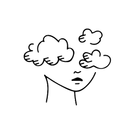
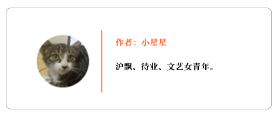

口述实录 | 我为什么要在这个春节囤30万个口罩
原文链接 备份链接 我心想，先送给武汉的医院，武汉安全了全国就安全了；再送给各地的医院，医生安全了，我们就安全。要不然，我们戴了口罩也没用。 口述、图片 | 周朝恩 整理 | 王 嫱 方雨斌 我是80后宁波人，2003年SARS爆发那 …

摘要：本文为“2020，我们的生活在继续”征文大赛的投稿作品。灾祸面前，谁都不知道自己会不会是那个被抽中的人。到了那时候，你希望别人怎么对你？
武汉封城20天，COVID-19肺炎疫情爆发快两个月了，在这个时间点我想写点什么。不仅因为我是暂居上海的武汉人，也因为我是一名普通的中国公民。
今年春节，因为一些个人原因，我不打算回老家武汉，至此我整整一年都没回家了。刚开始在长江日报上看到武汉传出不明原因肺炎的新闻，我没放在心上，心想：不就是个肺炎，有什么好怕的。

2003年SARS爆发，我才上初二，只晓得板蓝根卖脱销，教室里天天熏醋消毒，回屋里被爹妈逼着喝中药预防疾病。我周围没有人染病，当时整个湖北省也只有13个人被传染，所以我跟本就没搞明白SARS到底是个啥，也不觉得这个事情有多大。
1月17日还是18日，上海地铁上就能看到戴口罩的市民了，人数不多，年轻人为主。一看到有人戴口罩，我就晓得事情蛮严重了：肺炎极有可能传染。
当时我也没有立刻去药店买口罩，想着什么时候去买都可以，而且我裸辞后就很少出门了。等我拖到20号再去买，就买不到口罩了，家附近的3家药店都没有货了，好像整个上海的药店都缺货，有朋友在劳保用品店里买到了工业用口罩。
说实话，我胆子还蛮大，21日、22日我还特意出门去看电影。我是个电影发烧友，有喜欢的片子一定要去看。再说票是之前定的，不去就浪费了。
21日、22日开始，街上几乎所有人都开始戴上了口罩，听了钟南山院士的话，大家都晓得肺炎会传染。只有少数的行人空着脸在街上走来走去，比如我。这些人不是缺乏防控意识，而是没抢到货。
后来网上有很多段子，嘲笑老年人不戴口罩、不服管理，我想他们中的某些人可能是真的不在乎，但大部分人应该是没有口罩戴。
本身上了年纪的人抵抗力就差一点，还可能患有一些基础病，染上肺炎的概率、患病后死亡的概率都比年轻人高。他们消息不灵通，购买渠道单一，遇上疫情已经就够倒霉了，却还要承受莫须有的骂名。看着某些段子，我真的很难过。
看完电影后，我决定再也不出门了。为了过年，我之前囤积了一些蔬菜、水果，油盐佐料、大米杂粮都充足。到22号晚上，我的心态都算平稳，虽然有点害怕，但只有一点点，没有被“黑死”（吓死）。

等到23日早上起床，看到武汉封城的消息，我就崩溃了。
我非常非常地恐慌，马上联系家人朋友询问情况，又上网查询各种资料，想搞清楚封城的意义、疾病的后续发展、市民的生活保障等等。虽说家里人都安好，但我还是吓得要死。没想到事情会闹得这么大，也不知道后续会有什么进展，如果情况越来越糟怎么办？
刚开始我还能勉强保持冷静，身在武汉的闺蜜向我吐槽武汉市政府不作为，我还为他们辩解了两句。行政系统和身体肌肉一个样，平时多锻炼关键时刻才顶用。武汉作为一座二线城市，极少承接大型国际盛会，又没有强有力的经济实力做支撑，一下子摊上这么大个事，当然慌了神，做得不好也情有可原。
可之后放出的新闻让人越来越生气。
首先各大医院医疗物资告急，纷纷开始向社会求援。接着武汉的发热门诊人山人海，病人得不到有效救治，医护人员超负荷工作。市内公共交通停运，外卖不外送医院，医护人员上下班和吃饭都成了问题。
有很多病人还没等到确诊就在家过世了，死因只能写病毒性肺炎。医院一床难求，大量病人拖着病体在医院之间转来转去，寻不到床位又传播了疾病。各种棘手问题层出不穷，政府部门只会封锁交通，却没出台具体举措为民众排忧解难。
整座城市就像瘫痪了，普通民众、前线战士像溺水的人一样不断挣扎。广大群众开始自救，市民自发组织车队接送医护人员上下班，酒店为医护人员免费提供住所，餐馆坚持营业专供医院。
因同理心滋生出的怒火燃烧着，烧毁了理智。这些都是人命啊。早知现在何必当初？病发开头，要是立马采取有效措施，能搞成现在这样？我焦虑得不行，连续好几天都睡不着觉，每天都想哭，后续事态的演变更超出了我的想象。

25号的时候，上海的同事突然问我武汉的情况怎么样，是不是比报道中的严重多了。具体情况我不清楚，只晓得有蛮多人正在等待确诊。
他跟我说，环球港有位武汉女士有发热症状，还有个武汉妈妈带着发烧的小孩，开着车直奔上海医院，上海医院如临大敌。正式封城前有30多万人逃离武汉，大多数人的首选目的地是上海。
事实上在环球港门口的女士只是身体不适，没有发热，既非武汉人，又没到过武汉。至于武汉妈妈带着小孩看病的消息，就像是流言，流言里也只说小孩是正常的感冒发烧。
正式封城前有30多万人逃离武汉纯属无稽之谈。武汉三镇火车站每年春运发送人次1500万左右，在23日凌晨2点至10点发送旅客30万人次，这不是很正常的事吗？那些乘客早早买好了返乡的火车票，坐着火车回家有什么不对？难道他们都应该乖乖退票，为了大义留守武汉？
那30多万人里，绝大多数都是在汉务工人员，他们在武汉没有家人，没有固定住所，等春节店铺关门了说不定都吃不上一口热乎的饭菜。大疫当前，人最朴实的最真诚的想法就是回家，和家里人聚在一起什么都不怕了。这些人里有大概75%的人流向了湖北省内其他市，剩下的人多去了邻近省市。他们只是回家而已。
就算有少数人抱着躲瘟疫的想法跑了，那也是逃难。一个人想各种办法活命有什么错？如果是你，你不逃？
这几天的新闻大家也看了。湖北的确诊人数居高不下，截止到11号，整个湖北累计确诊病例数31728人，占全国的74.3%。武汉的病死率为4.61%，湖北的病死率为2.94%，整个湖北的病死率是其他地区的8.4倍，其他地区才0.35%。
留在湖北不仅得病的概率更大，患病还更容易死亡。这还只是确诊之后进入了统计的数据，实际上因这场肺炎死去的人要更多。
我被同事的傲慢激怒了。他身处上海，不是疫情重灾区，坐拥全国一流的医疗资源，安稳地坐在家里好吃好喝，已经够幸运了。他竟然还捕风捉影，根据道听途说的假新闻，埋怨湖北人不该把病毒带到上海来。

没有人比谁低贱，疫区的人有义务坚强，但没义务为了全国形势牺牲自己的生命。没有人比谁高贵，那些非疫区的居民未免把自己看得太金贵了点。好比发生了一场火灾，火灾中心的人都快被烧死了，外边的人只是被迸裂的火星烫伤了手指头就嗷嗷大叫。
你不能要求别人为了你的安全，无限放大自身的风险。人人生而平等，人命没有高低贵贱之分。从全局来说，封城切断一切人员流动是最好的选择。从个体来说，谁愿意做被牺牲的那一个？
武汉是座英雄城市，武汉人民是英雄人民，近千万武汉居民拿自己的生命做赌注安守疫区，其中某些人已经付出了生命的代价，这才换来了全国其他地方疫情的可控。他们付出得够多了。
你要说这都是武汉人民自找的，谁叫他们吃野味？吃野味的只是少数武汉居民，绝大多数人都是无辜的，是受害者。更何况吃野味的地方那么多，是武汉不幸被恶魔抽中了而已。
就算野味被控制住了，说不定下次会因为其他原因爆发大型传染病。谁都不知道自己会不会是那个被抽中的人。到了那时候，你希望别人怎么对你？是支持你、帮助你，还是把你看成瘟神，避而远之甚至怒而诛之？
不是因为我是武汉人我才说这些。假设我是上海人，我会对那些身在上海的疫区群众说：“请你们做好防护，及时上报病情，不要隐瞒，上海一定会帮你们的。不要怕，有事一起扛，全上海一流的医疗系统是你们最坚强的依靠。”
因为我知道敌视和诋毁不会产生任何价值，只会让人害怕恐惧、隐瞒病情耽误治疗，导致疫情扩散。
因为我知道他们是我的同胞，他们正在求生，而我不能见死不救。
为了自己，为了他人，请善良些吧。
感谢驰援湖北的医护人员。
本次征文大赛中，我们将选出25位“最佳读者”。粉丝读者们只要多多转发本文或之后发布的征文作品到群聊或朋友圈，发送相关截图给客服尖小椒（微信号jianxiaojiao45），或在参与活动的投稿作品下留言评论，就有机会得到一份专属粉丝读者们的惊喜礼包！

请尊重原创，保护版权
本文为“2020，我们的生活在继续”征文大赛的投稿作品，系橙雨伞公益和尖椒部落共同开发和制作。欢迎转载，但请保留本段文字：转载自关爱女性，赋能女性远离暴力的跨界公益项目“橙雨伞”（微信ID：chengyusan666）＋中国女工权益与生活资讯平台“尖椒部落”（jianjiaobuluo.com）。并保留以下作者信息：


原文链接 备份链接 我心想，先送给武汉的医院，武汉安全了全国就安全了；再送给各地的医院，医生安全了，我们就安全。要不然，我们戴了口罩也没用。 口述、图片 | 周朝恩 整理 | 王 嫱 方雨斌 我是80后宁波人，2003年SARS爆发那 …
原文链接 备份链接 _ 2020农历新年，没有过年的喜庆。无数的心被疫情牵动，武汉、孝感、黄冈、随州、荆州……多座城市陆续启动突发公共卫生事件一级应急响应，湖北、广东、浙江等共有34个省份出现新型冠状病毒感染病患。 截止2月8日，共 …
原文链接 备份链接 前言 2003年的非典，我在武汉读书，每天两点一线地简单生活，虽然也看看新闻报道，但那时的网络并不发达，信息量很少，武汉感染的人也很少，所以真的没有什么感觉。 2020年的肺炎疫情，爆发在我生活了将近20年的武汉——这 …
原文链接 备份链接 1⁄7 *不为这座城市做点什么，最后，可能这座城市就完了……* 2020年1月30日 @雷锋小杨 坐标：武汉 大家就叫我雷锋小杨吧，我也不想留名。 我是武汉人，做酒店管理工作。我们的酒店在远城区，现在还在营 …
原文链接 备份链接 封城已过去一周，在这个谈武汉人、湖北人色变的时候，我们想要好好看一看他们。今天我们挑选的几篇读者来稿，围绕着湖北的武汉和黄冈，讲述他们在旋涡和风暴中心的日子。他们有些住在城市，有些住在乡村和小镇。环境的不同给了他们不 …